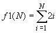
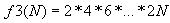
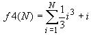

|
|
| Actividad:
Tarea
sobre el ciclo while. Unidad: Estatutos de repetición. |
|
| Descripción | |
 |
|
| Modalidad | |
 |
|
| Objetivos de la actividad | |
 |
|
| Instrucciones | |
 |
Forma de trabajo:
Utiliza el siguiente
esquema como apoyo para desarrollar tus soluciones:
 Ejercicio
1
Desarrolla un programa en C, que incluya las siguientes funciones: La función f1 que recibe un valor entero mayor o igual a uno y regresa el resultado de la siguiente sumatoria: 
Por ejemplo: f1(3) = 2(1) + 2(2) + 2(3) = 12 f1(6) = 2(1) + 2(2) + 2(3) + 2(4) + 2(5) + 2(6) = 42 La función f2 que recibe un valor entero mayor o igual a uno y regresa el resultado de la siguiente serie: f2(N) = 10 - 11 + 12 - 13
....
Por ejemplo: f2(2) = 10 - 11 = -1 f2(3) = 10 - 11 + 12 = 11 La función f3 que recibe un valor entero mayor o igual a uno y regresa el resultado de la siguiente serie: 
Por ejemplo: f3(3) = 2(1) * 2(2) * 2(3) = 48 f3(6) = 2(1) * 2(2) * 2(3) * 2(4) * 2(5) * 2(6) = 46080 La función f4 que recibe un valor entero mayor o igual a uno y regresa el resultado de la siguiente sumatoria: 
Por ejemplo:  En el main() construye un menú que muestre las siguientes opciones: SERIES A. f1 B. f2 C. f3 D. f4 S. Salir Opción? Recuerda que la captura de datos y validación de valores debe ser realizada en el main(), pues las funciones NO pueden realizar las tareas de validación o captura de datos. Nota que las opciones del menú son alfabéticas y el usuario podrá seleccionar la opción del menú presionando la letra mayúscula o minúscula correspondiente. Incluye el algoritmo como comentario al inicio del programa. Ejercicio 2 Desarrolla un programa en C, que incluya las siguientes funciones: La función multiplicación que recibe dos números enteros positivos num1 y num2. La función regresa la multiplicación de num1 por num2 utilizando el ciclo while y la operación suma. Por ejemplo: multiplicacion (3, 4) = 12 multiplicacion (3, 2) = 6 multiplicacion (1, 2) = 2 La función división que recibe dos números enteros positivos num1 y num2. La función regresa la división entera de num1 entre num2 utilizando el ciclo while y la operación resta. Por ejemplo: division (16, 3) = 5 division (5, 3) = 1 division (1, 3) = 0 En el main() construye un menú que muestre las siguientes opciones: OPERACIONES A. Multiplicación B. División S. Salir Opción? Recuerda que la captura de datos y validación de valores debe ser realizada en el main(), pues las funciones NO pueden realizar las tareas de validación o captura de datos. Nota que las opciones del menú son alfabéticas y el usuario podrá seleccionar la opción del menú presionando la letra mayúscula o minúscula correspondiente. Incluye el algoritmo como comentario al inicio del programa. |
| Recursos | |
 |
|
| Especificaciones de entrega | |
 |
|
 |
|
| DR© Tecnológico de Monterrey Campus Querétaro| Departamento de Desarrollo Académico| México, 2012 | |